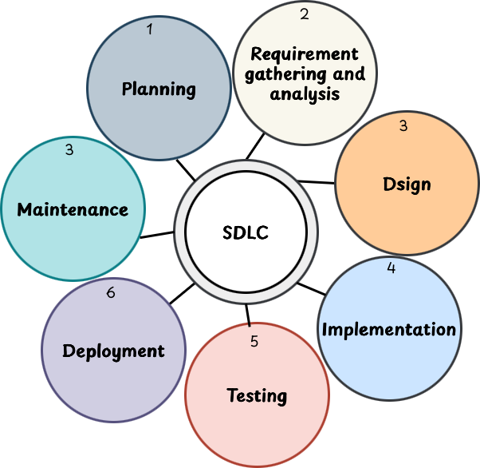
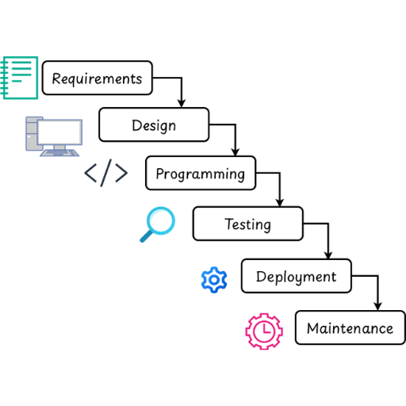
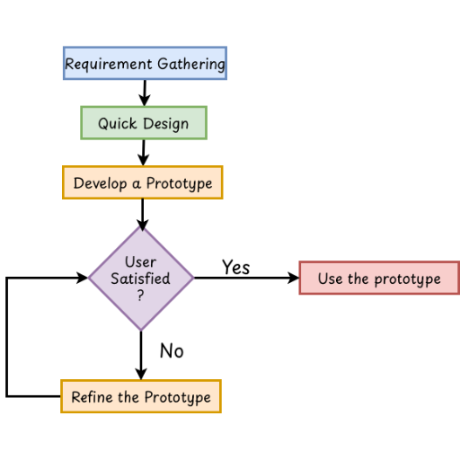
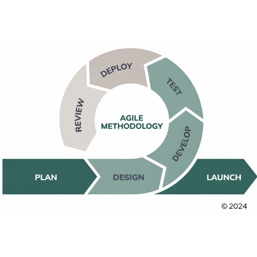
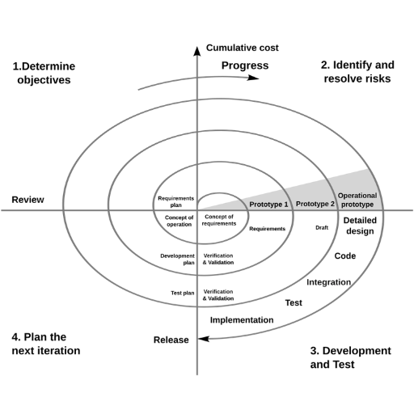
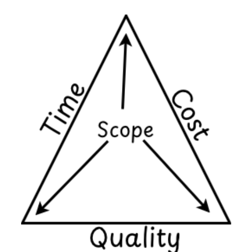

Some terms used in Software Project Models
- Instruction:- An instruction is a command given to a computer to perform a certain specified operation on given data.
-
Program:- The program is a sequence of instructions or it is the set of code that are usually designed to perform a specific task or function.
For example a sum program is only used to calculate the sum but it cannot be used to calculate division.
- Software:- A set of programs written for a computer to perform a particular task is called software.
-
Project:- A project is a well defined task which is a collection of several operations done in order to achieve a goal. For example software development and its delivery
The project comes with a start time and an end time. Projects end when its goal is achieved so it is a temporary phase in any organization.
Software Project
- A software project is the complete procedure of software development from requirement gathering to testing and maintenance.
- It is carried out according to the execution methodologies, in a specified period of time to achieve the intended software product.
Software development process
- In software engineering a software development process is the process of dividing the software development work into different distinct phases.
- The main goal of the software development process is to improve the design of product and management of product.
- The overall process of software development can be explained in terms of software development life cycle.
Software Development Lifecycle (SDLC)
- SDLC is the acronym for Software Development Life Cycle.
- It is also called the Software Development Process.
- It is the process used by software companies or industry to design, develop and test high quality software products.
-
It is a framework that defines different tasks performed during the software development process.

Fig:- Software Development Lifecycle (SDLC) -
Planning
- The planning stage is the initial phase of the SDLC.
- It involves defining the project scope, goals, and objectives. During this stage, project managers work with clients to determine the software’s requirements and feasibility.
-
The feasibility study analyzed the proposed system from different aspects so the development team or company can conclude how practical or beneficial the system will be to the organization.
The feasibility study includes Economic, Technical, Operational, Schedule feasibility.
-
Requirement Gathering and Analysis
- After the feasibility study, requirement gathering, and analysis phase is conducted.
- During this phase, all relevant information is collected from the customer to develop a product as per their expectation.
- The business analyst and project manager set up a meeting with the customer to gather all the information like what the customer wants to build, who will be the end user and what is the purpose of the product.
-
Design
- It is concerned with the design of the wireframes to illustrate how the software will look and function.
- It involves designing of various things such as input design, processing and output design etc.
-
Following design tools are used in this phase.
- Algorithm:- It is a finite sequence of instructions for solving a problem.
- Flowchart:- It is the pictorial representation of an algorithm.
- ER Diagram:- The entity-relationship diagram is an overall logical structure of a database that can be expressed graphically.
-
Implementation
- After the system design the programmers begin to develop the program by using a suitable high level programming language based on the design specifications created in the previous stage.
-
In this phase, the following processes are done.
- convert the logical structure into program
- database is created
- user are trained
-
System Testing
- It is an investigation conducted to provide stakeholders with information about the quality of the product or service under test.
- In this phase the testing and debugging tasks are performed. If any inconsistencies, errors or problems are found then they are corrected by improving the individual units.
-
Types of Software Testing:-
- Black Box testing:- Process of testing the whole project and test whether a whole system is functioning or not.
- White Box Testing:- In white box testing the particular model or unit is tested which helps to test the software internal logic.
-
Deployment
- After successful testing and bug fixing the developed project is deployed to the end users.
-
Review and Maintenance
- After system deployment, this phase involves periodic maintenance of hardware and software to ensure proper functioning.
- The review task includes objectives, cost, performance, standards, and recommendations.
-
System Analyst vs Software Engineer
- A system analyst is a highly skilled person who selects, configures and analyzes the computer based information system to support the decision making activities of an organization.
-
A good system analyst must have following characteristics:
- Knowledge of an organization.
- Technical Knowledge.
- Interpersonal communication skills.
- Problem solving skills.
- System analysis and design skills.
- Good characters and ethics.
-
The major duties and responsibilities of system analyst are..
- Define Requirements
- Prioritizing Requirements
- Analysis and Evaluation
- Solving the problem
- Design the system etc..
Software Engineer/Developer
- A Software Engineer (or Software Developer) is a professional who designs, develops, tests, and maintains software applications and systems to meet the needs of users and organizations.
- They use programming languages, frameworks, and engineering principles to build reliable and efficient software.
-
Characteristics of Good Software engineer are:
- Strong programming knowledge
- Problem-solving Ability
- Creativity and innovation
- Teamwork and communication skills
- Adaptability
- Ethics and responsibility
-
Duties/Responsibilities of a software engineer are:
- Analyze user requirement
- Design software solution
- Write and test code
- Debug and maintain software
- Collaborate with teams
Differences between System Analyst and Software developer.
| System Analyst | Software Developer |
|---|---|
| Deals with the overall management of the project. | Deals with designing and development of good quality software or applications. |
| Conduct user research, interview customers and develop requirement documents. | Software engineers use the documents created by analysts to build the solution. |
| Do not require a high level of coding skills. | Requires a high level of coding skills. |
| System analysts design the external interface of different components of a project. | Software engineers implement the design by using coding. |
| Perform their duties in an office. | Programmers can work remotely. |
Software Development Model
- A software development model is a structured and systematic approach of planning, designing, building, testing and deploying of software systems.
- It serves as a framework that outlines the tasks, activities and processes involved in developing the software.
- These models provide the guidelines and best practices for the software development team throughout the project life cycle.
Types of Software Development Models
-
There are several software development models each with its own set of principles and methodologies.
-
Waterfall Model
- The waterfall model is the linear and the sequential approach where each phase is completed before moving to the next phase.
- It is the oldest type of software development model.
-
The diagrammatic representation of the waterfall model is shown in figure below.

Fig:- Waterfall Model -
Requirement Analysis
- It is the first state of the waterfall model. In this stage the developer should identify the actual requirements of the customer.
-
System Design
- Once the requirements of the customers have been collected, the design phase is conducted.
- In this phase the team builds out the skeleton of how the software will work and how information will be accessed.
-
Programming/Development
- During the programming phase, the system design is converted into the actual product by programming or coding. This development phase involves the creation of the system software.
-
Testing
- This is the phase where the development teams hand the project over the quality assurance or testing team.
- QA testers search for any bugs or errors that need to be fixed before the project is deployed.
-
Deployment
- This is the stage in which the ready software product is deployed to the end users or customers.
-
Maintenance
-
Once the product is deployed, there may be chances of discovering the new bugs on the project.
Which are required to be maintained so that it can work as expected.
Advantages of WaterFall model
- Simple and easy to understand
- Clear structure and goals
- Comprehensive Documentation
- Good for stable requirement
- Easy progress Measurement
Disadvantages of WaterFall model
- Lack of flexibility and Adaptebility
- Late Testing and User Feedback
- High Cost of Changes
- Not Suitable for Complex Projects
- Expended Project Timelines
-
-
-
Prototyping Model
- The software development model that focuses on creating a working model called prototype of the software to gather the feedback and refine the requirements before developing the final product.
- This model is more suitable for developing the new system where there are no clear ideas of requirements, inputs and output of the system.
-
The diagrammatic representation of this model is shown in fig below.

Fig :- Prototyping Model -
The different phases of this model are:-
-
Requirement Gathering
- In this phase the initial requirements are collected from users but these are mostly incomplete.
-
Quick Design
- Once the requirement phase is completed, the basic design of the software is created.
-
Develop the prototype
- The prototype is developed based on the initial design. The prototype can take various forms.
- Throwaway prototyping:- A disposable prototype is developed just to understand the requirement. Once its purpose served, then it is discarded.
- Evolutionary prototyping:- The initial prototype is refined continuously and evolved into the final product.
-
User satisfaction
- The prototype is presented to the end users for evaluation and feedback. This phase is very important to clarify the requirements.
-
Refinement
- Based on the feedback received the prototype and requirements are refined. In this phase the new features and changes are added into the design.
-
Deployment
- Once the system is developed it is deployed on the production line as a finished product.
Advantages of prototyping model
- Errors can be detected earlier.
- Higher chances of user expectation meet.
- Rapid development.
- Suitable where user requirements are changing.
Dis-advantages of prototyping model
- Time consuming process.
- Special tools and techniques are required.
- It may increase the complexity of the system.
-
-
Agile model/methodology
- An agile methodology is an iterative approach of software development. It breaks down the development of a product into repeated cycles (iterations).
- It refers to a set of principles and practices for software development that focus on flexibility, collaboration and customer satisfaction.
-
The diagrammatic representation and the different phases involved in agile methodology are as follows.

Fig:-Agile methodology -
Requirement Gathering
- This is the first phase in which the basic requirements of the customers are gathered and plan for the further steps.
-
Design
- When all the requirements are identified, the design phase is design tools like ER diagram, UML diagram and data flow diagram are used for the system design.
-
Development
- When the design phase is completed the development phase is conducted. In this phase the system design is provided to the development team and according to the provided design, the developer team starts to develop the project.
-
Testing
- In the testing phase the tester team simply tries to find out the bugs and any errors present in the system. If errors are found then it's fixed.
-
Deployment
- After the successful testing the ready product is deployed on the cloud or handover to the customer.
-
Review and Feedback
- After releasing the product, the team receives the feedback about the product and their works. According to the feedback the team can find out the customer satisfaction.
-
Launch
- The launch phase ensures that the software is successfully deployed, configured, and accessible to users. It marks the transition from development to real-world usage.
-
Advantages of Agile Methodology
- Flexible and adapts to changes easily.
- Faster delivery of working software.
- Continuous customer involvement.
- Improved product quality through regular testing.
- Better team work and communication.
Disadvantage of Agile model
- Difficult to predict time, cost, and scope.
- Needs constant customer feedback.
- Can be hard to manage in large projects.
- Documentation is often incomplete.
- Risk of scope creep due to changing requirements.
-
Spiral Model
- The software development model that combines the elements of both waterfall model and prototyping model is called spiral model.
- This model is particularly well suited for large scale and complex projects.
-
This model focuses on risk management.

Fig:- Spiral Model -
The different phases involved are:-
-
Planning
- In this initial phase, project objectives, requirements are defined and decide to continue further loop of spiral. If decided to continue, plans are drawn up for the next phase.
-
Risk Analysis
- In this phase, the development team identifies potential risks, like requirement changes, security issues, budget or schedule problems, and team conflicts, and plans how to manage and reduce them.
-
Engineering
- In this phase the actual development of the project occurs. This phase is similar to the development phase where the programmers write down the codes for the project.
- In this phase different tasks like design, coding, integration, testing and implementation are performed.
-
Evaluation
- After the launch of a software project on the client’s site, the client is open to sharing feedback about the software. If any bugs or errors are found out then the correction lists will be sent to the development team, and again, a new baseline will begin to fix all the bugs, and after fixation of all requirements, the final product will be ready for final launch.
-
-
Requirements collection methods
- Requirement collection is the first step and very crucial step in the software development process. This plays a very important role in system design and development.
-
Here are some common methods:
-
Interview
- Conducting one on one or group interviews with stakeholders including end-users, customers, subject matter experts is a traditional and effective method for gathering requirements. It is the best method when detailed, quantitative information is needed by key stakeholders.
-
Surveys and Questionaries
- Surveys and questionnaires are useful to collect requirements by large no. of stakeholders.
- In this method written sets of questions are distributed to a large audience to collect the data or requirements. They can be distributed electronically or on paper and allow stakeholders to provide feedback.
-
Workshops
- Workshops focus groups bring together and can be an effective way of collecting requirements.
- It promotes stakeholders engagement and collaboration & helps to reach agreement quickly.
- Best for complex projects requiring diverse input and agreement among multiple stakeholders.
-
Document Analysis
- In these methods the existing documents, reports, manuals are analyzed to collect requirements.
-
Observation
- Observing users or system operation in their environment helps analysts to understand how people are working and what problems they face.
-
Prototyping
- This modern approach gathers requirements by creating a prototype of the system, allowing users to see the product and give feedback.
-
Brainstorming
- A method of requirement collection in which a group of members are encouraged to share the ideas and requirements freely without criticism.
-
Software Project Management
-
Software project management is the process of planning, organizing and executing the development of software applications within the constraints of time, budget and quality.

Fig:- Triple constraints for software project Software project management activities
-
The different activities are listed below:-
-
Project planning
- This involves defining the project scope, objectives, requirements and constraints. The project manager creates a detailed project plan that outlines the tasks, timelines and resources.
-
Resource Management
- It involves identifying the right people and resources (developers, designers, testers, hardware, software) required for the project.
-
Risk Management
- In software projects, there may be different types of risks so identifying the risk and developing the strategies to mitigate them is simply called risk management.
-
Cost Management
- Cost management in software development is essential for ensuring that projects are completed within the budget while meeting quality and time constraints. Effective cost management involves planning, estimating, budgeting and controlling costs throughout the software development lifecycle.
-
Time Management
- It is the process of planning, organizing and controlling how much time to spend on specific tasks while managing the project.Effective time management helps the developer team prioritize tasks, maximize productivity and complete the task within the given timeframe.
-
-
Need of software project management
- The simple software project management process involves a series of activities aimed at ensuring that software projects are completely meeting their objectives and delivering value to the stakeholders. Hence it is essential to manage the software project effectively.
Feasibility Study
- Feasibility study in software engineering is a study to evaluate feasibility of proposed project.
- It is one of the important stages of the Software Project Management Process.
-
Types of Feasibility study:
-
Technical Feasibility
- Checks if the project can be developed with the availability technology, tools & technology skill.
-
Economical Feasibility
- Determine whether the project is cost effective i.e. if the expected benefits out of the cost.
-
Operational Feasibility
- Famine whether the software will work in the real environment and be acceptable to the user.
-
Schedule Feasibility
- Access whether the project can be completed within the required time frame.
-
Legal Feasibility
- Ensures that the project complies with laws, regulations & organization policies. In the legal feasibility study project is analyzed from a legality point of view.
-
Quality Software
- Quality Software is software that meets or exceeds customer expectations and performs its intended functions efficiently, reliably, and securely. It should be easy to use, maintain, and adapt to changing needs while minimizing defects and failures.
-
Key Aspects that conclude Software Quality
-
Functionality
- The Software performs all required tasks correctly and completely.
- It meets the specified requirements and user needs.
-
Reliability
- The software operators without failure under specified conditions.
- It provides consistent performance over time.
-
Usability
- The software is easy to learn and use.
- The user interface is intuitive and user-friendly.
-
Efficiency
- The software makes optimal use of system resources such as memory. CPU, and storage.
- It performs tasks within acceptable time limits.
-
Maintainability
- The software can be easily modified to correct defects, improve performance, or adapt to changes.
- The code is well-structured, documented, and modular.
-
Portability
- The software can be transferred and run on different hardware or operating systems with minimal effort.
-
Security
- The software protects data and resources against unauthorized access and attacks.
- It ensures data integrity, confidentiality, and availability.
-
Scalability
- The software can handle increased workload or number of users without performance degradation.
-
Reusibility
- Parts of the software can be reused in other applications, reducing development time and cost.
-
Testing
- The software supports easy testing and verification of its functionalities.
-